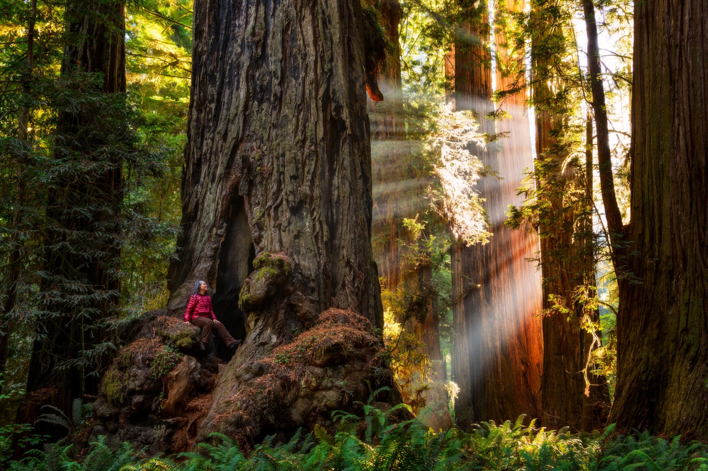
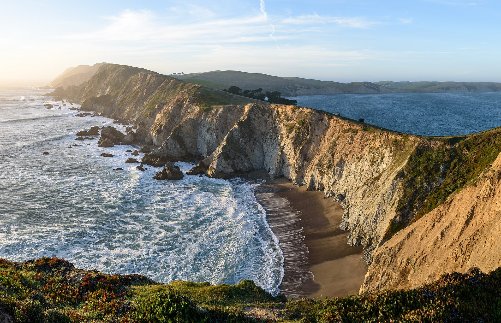

Explore California's Breathtaking Natural Beauty
Redwood National and State Parks
Step into a world of giants in the Redwood National and State Parks. Marvel at the towering ancient redwood trees, hike through lush forests, and discover serene rivers and coastal landscapes. This is one of the most awe-inspiring natural wonders of California.
Learn MoreDeath Valley National Park

Experience the extremes of nature in Death Valley National Park. Explore the vast desert landscapes, visit stunning canyons, and witness unique geological formations. Be amazed by the lowest point in North America and the mesmerizing night sky.
Learn MorePoint Reyes National Seashore
Discover the rugged beauty of Point Reyes National Seashore. Explore its stunning coastal cliffs, sandy beaches, and rolling hills. Visit the iconic Point Reyes Lighthouse, hike along scenic trails, and spot wildlife such as elephant seals and migrating whales.
Learn MoreLassen Volcanic National Park
Immerse yourself in the volcanic landscapes of Lassen Volcanic National Park. Witness boiling mud pots, steaming fumaroles, and picturesque alpine lakes. Hike to the summit of Lassen Peak, the largest plug dome volcano in the world.
Learn More